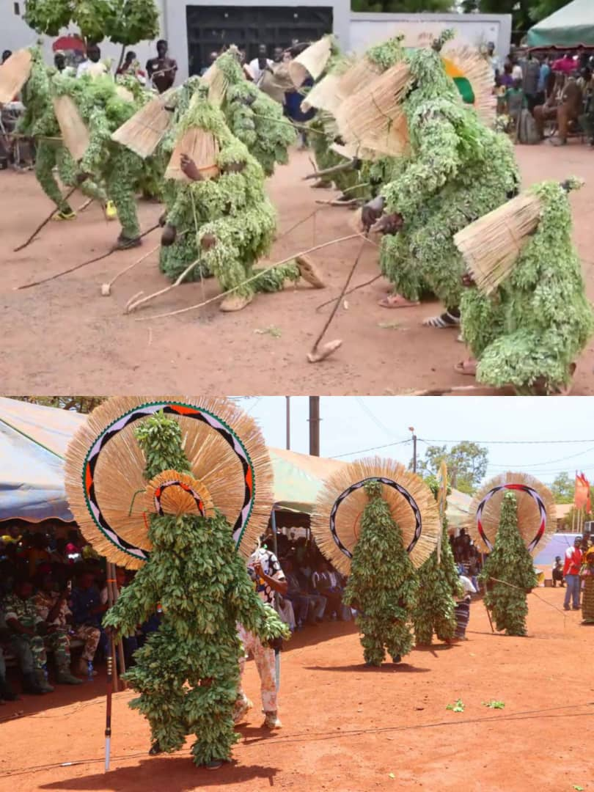

Masques en feuille
Les masques en feuille sont une expression unique de l'identité culturelle des communautés de Houndé. Ils sont fabriqués à partir de matériaux naturels comme des feuilles de bananier, de palme ou d'autres végétaux souples. Ces masques sont utilisés lors de cérémonies traditionnelles, souvent liées à la récolte, à la paix ou à des rituels d’initiation.
Ces masques éphémères sont fabriqués avec un savoir-faire transmis de génération en génération. Bien qu’ils soient temporaires, leur rôle symbolique est fondamental dans le tissu social de certaines localités de Houndé.